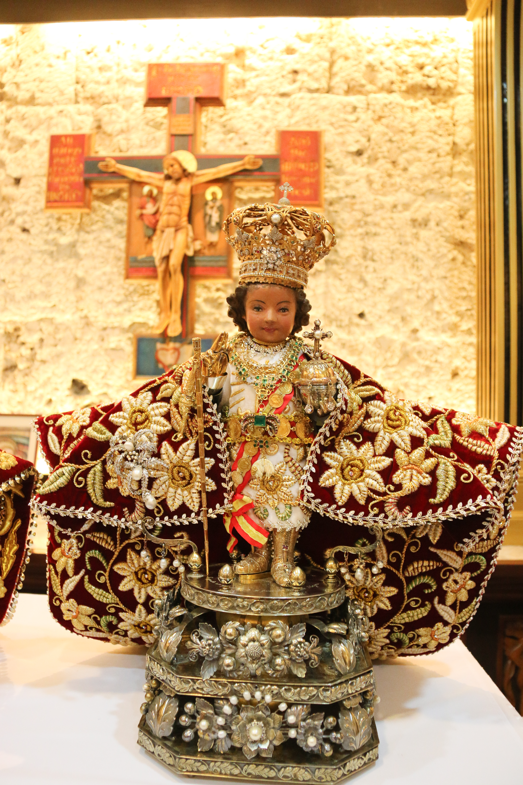
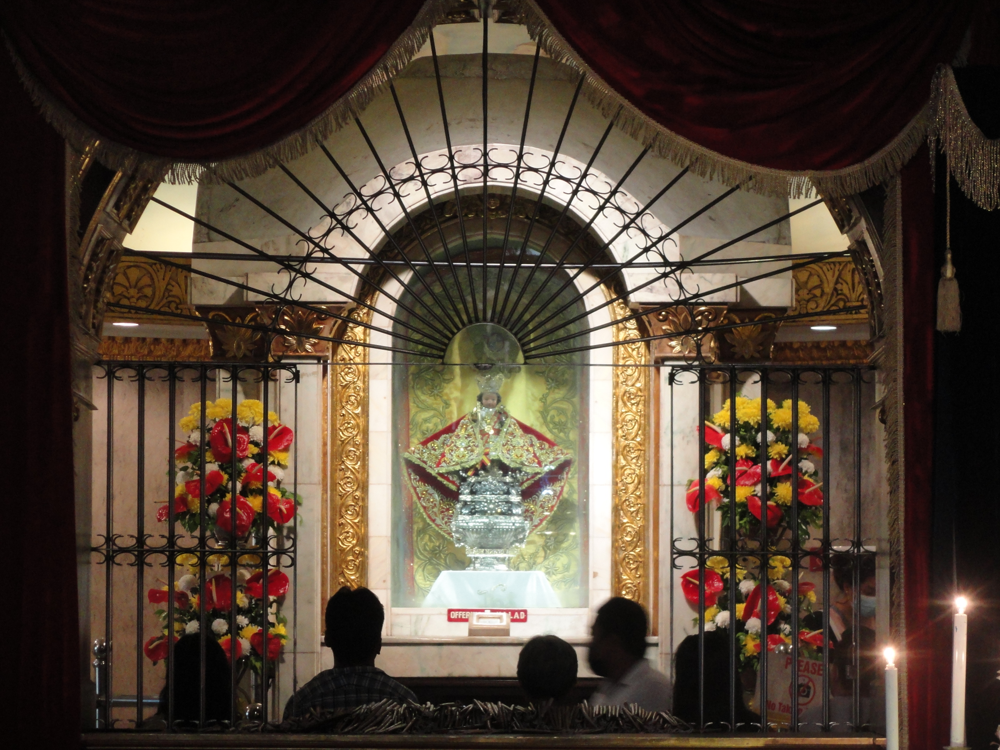
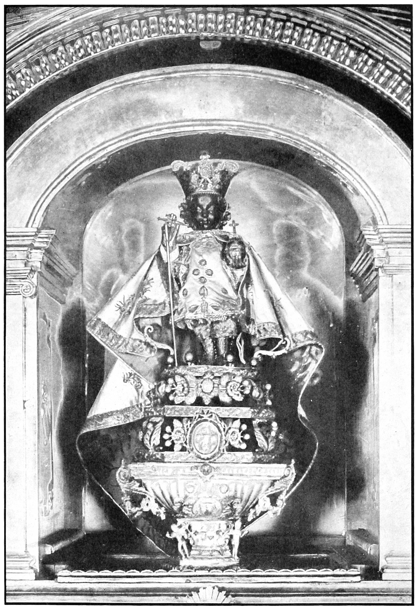

← Return to Sto. Nino DevotionalSanto Niño de Cebu source photographs
Two photographs of the original icon and one historical candidate. The files are the full-size versions provided by their sources. Select a photo to open the full-size image.

Original icon portrait
Cofradiabsn · 16 January 2014 · CC BY-SA 4.0
The file page explicitly identifies the original icon. Credit the photographer, link the license, indicate changes and distribute shared adaptations under the same or a compatible license.
Source and licensing record
Icon inside the Marble Chapel
Ryomaandres · 4 December 2022 · CC0 1.0
The photo shows the icon in the chapel shrine. The uploader gives a general caption. The Basilica identifies the icon displayed inside the chapel case as the original.
Source and licensing record
Archival plate published in 1903
Photographer unidentified · Published 1903 · U.S. public domain per Commons
The period caption reads Santo Niño de Cebú. Keep as a historical candidate pending confirmation of the exact statue and any applicable rights outside the United States.
Source and licensing recordSources for additional photographs
- Basilica Marble Chapel. Official provenance source. Ask the Basilica Media Centre and Museum for distinct photographs and permission for editing, app display and NFT distribution. Source
- Cofradiabsn 2014 alternate 1. Shares the main portrait’s capture timestamp and closely matches its pose and background. Treat as an alternate of the same sitting. Source
- Cofradiabsn 2014 alternate 2. Shares the main portrait’s capture timestamp and closely matches its pose and background. Treat as an alternate of the same sitting. Source
- 2009 chapel photograph by Ellis Manuel Mendez. Photographer identifies the original and the 2009 fiesta regalia. Flickr marks the image all rights reserved. Request permission from the photographer. Source
- 2009 Wikimedia version. Commons lists Puertopalomar as author and Ellis Manuel Mendez as source, and declares CC BY 3.0. The Flickr listing reserves rights. Confirm the upload and authorization with the photographer before use. Source
- Augustinian Provincialate photograph. The CCP Encyclopedia credits the Augustinian Province Provincialate Offices. Ask for the full-resolution image and usage terms. Source
- 1945 U.S. Army Signal Corps photograph. The archive caption identifies the 1521 icon but also describes the figure as gold, which conflicts with the Basilica’s identification of the original as pine. Ask the archivist or Basilica to verify the subject. Source
- 2025 red-regalia portrait. The uploader uses a general title and provides no identifying chapel or archival context. Confirm the subject before counting this image. Source
- Cebu Daily News account of the original icon. The report records a 2012 viewing of the original outside its chapel case. Ask the publisher whether photographs from that viewing survive and who owns them. Source
- Basilica archive and media contacts. Official contact page for the BMSN Media Centre and Santo Niño Museum. Source
For a 72-image collection, obtain distinct photographs from the Basilica archives or participating photographers. For each new photo, record the subject, photographer, capture date, rights holder and terms for editing, app display and NFT distribution. A Creative Commons license does not grant an exclusive right to the image.